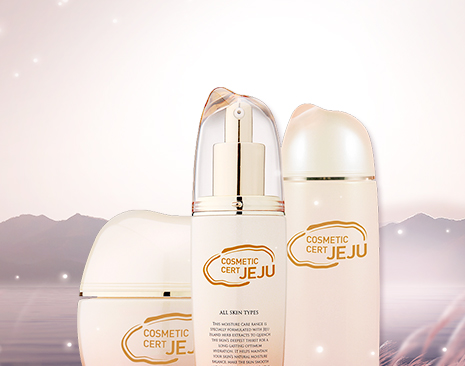
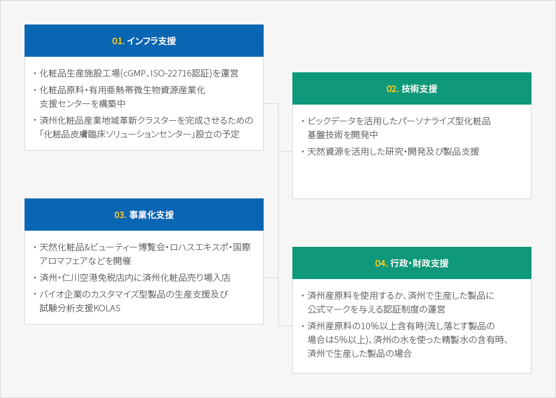

バイオテクノロジー
- Home
- 投資環境
- 未来の有望産業
- バイオテクノロジー
化粧品原料産業


済州のクリーンで独特な植生環境から抽出した天然資源を活用した化粧品産業は、持続的な行政・財政的支援に後押しされ、毎年、生産量、産業規模及び売上げが増加を続けています。
特にアジアで大きな成功を遂げた済州の化粧品素材、原料生産から販売までの堅固なバリューチェーン、そしてハイレベルの研究施設を整えています。
なお、済州テクノパークは、国際化粧品原料集(ICID)に登録された済州生物資源素材の化粧品原料を選別して「済州産天然化粧品原料資料集」を発行し、済州化粧品の価値を高め、競争力を強化するために、「済州化粧品認証制度」を実施しています。
済州はすでにその名前そのものが東アジアで高い認知度を誇るブランドとなっています。清浄済州のブランドで生産されるバイオ・化粧品原料産業は無限の可能性を潜めています。
済州の代表 バイオ資源
-
クリーンウォーター
- 長期間にわたり火山の岩盤層を透ることで不純物がろ過されたきれいな水
- 済州特別自治道開発公社の「三多水」は済州の地下水を商品化して成功したケース
- 1998年の発売以来、20年間国内市場で販売1位、2018年韓国最大販売量84万トンを記録
-
溶岩海水
- 海水が火山の岩盤層でろ過される過程で生成された塩分を含んだ地下水
- カルシウム・マグネシウム・バナジウム・ゲルマニウムなど天然ミネラルが含まれており、多様な活用が可能
- 現在、溶岩海水産業化支援センター1・2号に化粧品・食品など関連企業が入居
-
火山ソンイ(火山灰)
- マグマが爆発する時に生成された天然セラミックで、済州全域に分布
- 多様なミネラル成分を含有し、吸水・吸着・抗菌機能、遠赤外線、マイナスイオンの放出などに優れている
-
海藻類
- ホンダワラ、カジメ、ワカメ、ヒジキなど700種余りの多彩な海藻類が生息
- 食用・医薬品・化粧品原料として人気
-
ツバキ・緑茶・アブラナ・みかん
- 済州の代表的な特産品で、済州の特色を表す検証された化粧品原料
- 自然主義済州ブランドの化粧品メーカーがすでに多様な製品を発売中
バイオ産業のための多様な支援


-
01.インフラ支援
- 化粧品生産施設工場(cGMP、ISO-22716認証)を運営
- 化粧品原料・有用亜熱帯微生物資源産業化支援センターを構築中
- 済州化粧品産業地域革新クラスターを完成させるための「化粧品皮膚臨床ソリューションセンター」設立の予定
-
02. 技術支援
- ビックデータを活用したパーソナライズ型化粧品基盤技術を開発中
- 天然資源を活用した研究・開発及び製品支援
-
03. 事業化支援
- 天然化粧品&ビューティー博覧会・ロハスエキスポ・国際アロマフェアなどを開催
- 済州・仁川空港免税店内に済州化粧品売り場入店
- バイオ企業のカスタマイズ型製品の生産支援及び試験分析支援KOLAS
-
04. 行政的支援
- 化粧品生産施設工場(cGMP、ISO-22716認証)を運営
- 化粧品原料・有用亜熱帯微生物産業化支援センターを構築中
- 済州化粧品産業地域革新クラスターを完成させるための「化粧品皮膚臨床ソリューションセンター」設立の予定